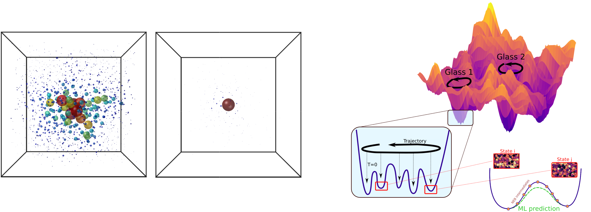
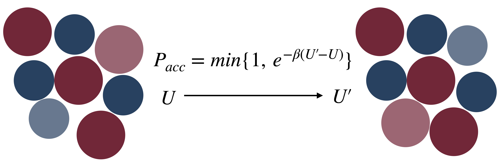
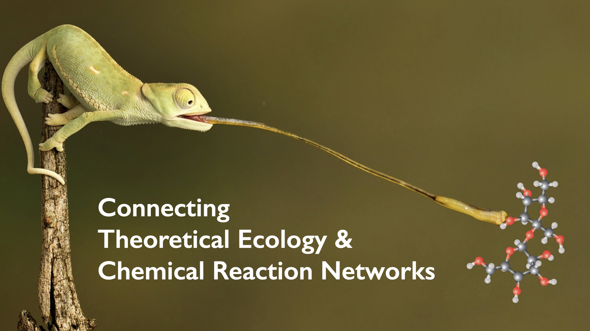
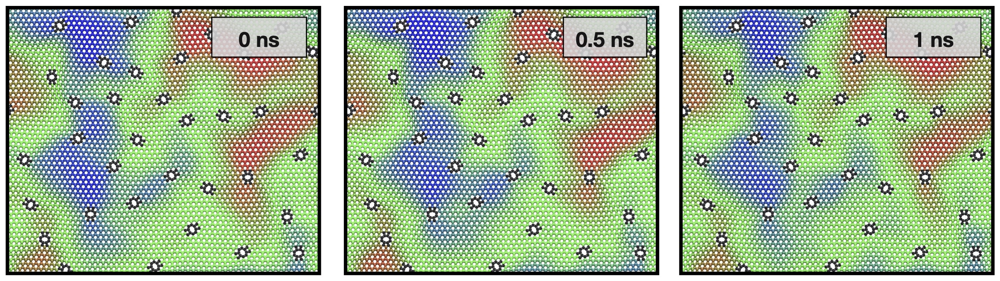

Research topics
I am a theoretical physicist interested in various problems in soft and condensed matter physics, as well as non-equilibrium statistical physics, with a focus on disordered systems.
Free energy landscapes in amorphous solids
Collaborators: L. Berthier (Univ. Montpellier) and F. Zamponi (ENS, Paris).
I investigated the structure of the free energy landscape in amorphous solids, ranging from atomic and molecular glasses to colloidal and granular assemblies. This is of importance because the structure controls all physical properties: vibrational, transport, elastic, rheological and low-temperature. This problem is theoretically challenging as it combines out-of-equilibrium conditions with disorder. In this context, I developed and combined smart algorithms for particle-based computer simulations with theoretical methods based on advanced statistical mechanics for disordered systems including replica calculations and liquid state theory.
I computed the free energy of a soft-particle model describing atomic, molecular, colloidal glasses, and granular packings in the limit of large spatial dimensions [4] (first image, below). I revealed a surprisingly rich phase diagram: depending on preparation (referring to molecular, colloidal or granular regimes), the solid at low temperature is either found in a simple structure of energy minima, or in a marginally stable Gardner phase characterized by a hierarchical organization of minima. My results predicted the existence of a hierarchical landscapes in molecular, colloidal glasses and granular assemblies.
I performed particle-based computer simulations in three dimensions to assess the validity of my predictions beyond mean field. In models of atomic glasses, ergodicity is broken at low temperature due to energy barriers corresponding to localized defects, and a Gardner phase is not observed [3]. In conditions relevant to colloidal and granular systems, I found a marginally stable phase characterized by hierarchical landscapes (second) and delocalized excitations (third image) [9]. In this regime, temperature cycles give rise to rejuvenation and memory effects [6], as for spin glasses in which hierarchical landscapes were first discovered. Depending on temperature, the same glass behaves as an old (little aging) or a young glass (strong aging). Hence the choice of Da Vinci's drawing (fourth image) for PRL's Editor Suggestion.
To read more: Phys. Rev. Lett. (2017), Phys. Rev. E (2019), Phys. Rev. Lett. (2019), Nature Comm. (2019).

Two-level systems
Collaborators: D. Khomenko and D. R. Reichman (Columbia Univ.), S. Ciarella, F. Mocanu, F. Zamponi (ENS Paris), and L. Berthier (Univ. Montpellier).
At very low temperature, the specific heat of glasses scales linearly with temperature instead of the cubic law observed in crystalline solids caused by phonons. In the 70s, the existence of two-level systems (TLS) was postulated to explain this excess contribution to the specific heat. These TLS would come from rare, nearly degenerate, adjacent local minima which could support quantum tunnelling with energy splitting of the order of 1K.
The localized defects I found in models of atomic glasses [3] looked like good candidates for TLS. I took advantage of the swap Monte Carlo algorithm to generate in silico glasses with widely different stabilities, from ultrastable to hyperquenched. Using a state-of-the-art reaction path-finding protocol to locate double-well potentials in the multidimensional potential energy landscape, we performed the first direct numerical sampling of two-level systems [9]. We revealed that their nature can vary from collective to highly localized (left, credit Khomenko). We demonstrated that the density of TLS decreases with increasing glass stability, in line with recent measurements on ultrastable vapor-deposited amorphous films. We confirmed these results by measuring the TLS density in a realistic model for metallic glasses [16]. In parallel, we are developing machine-learning techniques to accelerate the sampling of TLS in realistic glass forming models (right, credit Ciarella).
To read more: Phys. Rev. Lett. (2020), J. Chem. Phys. 158, 014501 (2023), and arXiv:2212.05582. See also Chandra Varma's commentary in the Journal Club for Condensed Matter Physics.

Open access, efficient algorithms for particle-based computer simulations
Collaborators: E. Flenner (Colorado State Univ.), L. Berthier , C. J. Fullerton, M. Singh (Univ. Montpellier), K. Nguyen (Physics, Cambridge)
Standard numerical techniques, such as Molecular dynamics (MD) and Monte Carlo (MC), for simple glass-forming models fail to reach experimentally relevant timescales. In experiments, liquids fall out of equilibrium when the timescale for molecular motion has increased by 12 orders of magnitude, reaching around 100s. Months-long GPU or multi-CPU simulations reach 10ms at most. The introduction of Monte Carlo particle-swap (image) combined with the recent development of new computer models (ternary mixtures for metallic glasses, continously polydisperse for colloids) accelerates dramatically the thermalization of liquids, up to 1040 times faster in two dimensions. We have implemented this algorithm in the open access LAMMPS package, for a variety of interaction potentials [5]. I can provide help with its use upon reasonable request.
Together with K. Nguyen (Part III student, Cambridge), we are investigating the relaxation mechanism with particle-swap dynamics in order to understand its giant speedup, and with the long-term goal of developing the next generation of algorithms.
To read more: J. Stat. Mech. (2019).

Equilibrium dynamics of supercooled liquids
Collaborators: B. Guiselin and L. Berthier (Univ. Montpellier).
Using state-of-the-art computational techniques combined with simple statistical models for heterogeneous and slow dynamics, we proposed a revolutionary picture for the viscous flow of liquids close to the glass transition. We employ the particle-swap algorithm to generate equilibrium configurations at temperatures down to the experimental glass transition. We follow the equilibrium physical dynamics of these unprecedentedly deep supercooled liquids by use of multi-CPU months-long simulations [12]. At low enough temperature, the separation between fast and slow particles reaches more than 10 decades in time. In this unexplored temperature regime, close to the glass transition, we directly see the crucial role played by dynamic facilitation to relax the liquid (left image, cover). The color code indicates the microscopic relaxation time, from red to yellow, green and blue. Dynamic facilitation is evidenced by the fact that neighboring regions follow the color code. Mobility thus propagates slowly to nearby regions over time. Building a trap model with dynamic facilitation (right), we rationalize the assymetric shape of relaxation spectra observed in experiments [11].
To read more: J. Chem. Phys. (2021), Nature Physics (2022) and its News & Views by R. Zorn, and Phys. Rev. X 12, 041028 (2022).

Emergent behavior in chemical reaction networks
Collaborator: E. de Giuli (Toronto Metropolitan Univ.)
Both natural ecosystems and biochemical reaction networks involve populations of
heterogeneous agents whose cooperative and competitive interactions lead to a rich dynamics of
species’ abundances, albeit at vastly different scales. The maintenance of diversity in large ecosystems is a longstanding puzzle, towards which recent progress has been made by the derivation of dynamical mean-field theories of random models. The theory predicts the relevance of marginal stability in ecosystems, with profound consequence on their stability and dynamics. If and how these phenomena have parallels in biochemical reaction networks is currently unknown. Making this connection is of interest since life requires cooperation among a large number of molecular species, and the origin of life is hotly debated. We find a reaction network whose large-scale behavior recovers the random Lotka-Volterra model recently considered in theoretical ecology. We use tools from statistical field theory and statistical physics for disordered systems such as the Doi-Peliti formalism and dynamical mean-field theory for random reaction networks. We clarify the assumptions necessary to derive the large-scale description of generalized Lotka-Volterra model, and reveal the underlying assumptions made on the noise to recover previous mean-field theories.
To read more: J. Phys. A: Math. Theor. (2022).

Influence of defects on the rippling dynamics of graphene
Collaborators: F. Thiemann and E. A. Müller (Univ. College London), A. Michaelides (Chemistry, Cambridge)
With graphene’s behaviour being governed by the presence of imperfections in the crystal lattice, defects can be regarded as elementary building blocks to the material properties. A very recent study showed that defects (divacancies) affect the static structure of graphene, giving rise to strongly wrinkled surfaces. Here we investigate the impact of defects on the rippling dynamics of graphene sheets. We employ large-scale machine learning-driven molecular dynamics simulations. We find that increasing the defect density induces a transition from freely propagating ripples to frozen and static buckling (below, credit Thiemann). We find a critical defect concentration of 0.1%, which explains the non-monotonic behavior of Young’s modulus observed experimentally.
Article in preparation.
